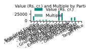
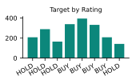
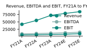
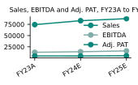
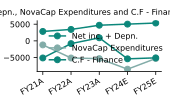
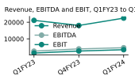
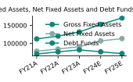
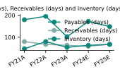

Tata Power Company Limited (Bloomberg CODE: TPWR:IN) has demonstrated robust growth across its key financial metrics. Revenue increased, rising to 22,478 in the latest quarter, reflecting a 6.3% rise from the prior period. EBITDA also rose, reaching 4,675 with a 79.2% increase, while EBITDA margins improved by 57.9%. The company’s earnings before interest and tax (EBIT) followed suit, climbing to 3,469 and growing by 138.4%.
On a longer horizon, sales have risen, with the latest figure of 87,627.1 representing a 17.9% uplift since the start of the period. EBITDA for the same span rose to 15,882.1, up 24.3%. Adjusted profit after tax (Adj. PAT) and adjusted earnings per share (Adj. EPS) both rose, reaching 5,143.5 and 16.2 respectively, with growth rates of 10.9% and 13.3%.
Valuation multiples have also improved. The price‑to‑earnings (P/E) ratio rose to 31.2, up 28.9%, while the price‑to‑book (P/B) ratio increased to 3.4, a 21.4% rise. The enterprise value to EBITDA (EV/EBITDA) multiple grew to 16.2, up 1.2%.
Leverage has eased, as the debt‑to‑equity (D/E) ratio fell to 1.5, a 28.6% decline, indicating a strengthening balance sheet. Analyst recommendations show a total of 2,070 target actions, with the largest share being 394 classified as BUY.
The company’s investment portfolio includes notable holdings such as - Zenith Trading with the highest multiple of 19.4, and - Solaris Renewables holding the largest value at ₹37,199, representing 30.9% of the total. The average multiple across the portfolio stands at 3.9, and the average value per share is ₹49.
Overall, Tata Power’s financial trajectory reflects consistent growth, improving profitability, and a more conservative capital structure, positioning it well for continued performance in the upcoming periods.
| BSE CODE: 500400 | NSE CODE: TATAPOWER |
|---|---|
| Bloomberg CODE: TPWR:IN | SENSEX: 73,842 |
| Particulars | Methodology | Multiple | % Holding | Value (Rs. cr.) | Value Per Share (Rs.) |
|---|---|---|---|---|---|
| Regulated Equity | |||||
| - Kalyan Operations | EV/EBITDA | 9.7 | 36.4% | 16,886 | 60 |
| - Chandrapur | P/BV | 1.9 | 75.0% | 1,582 | 5 |
| - Jaipur Discom | P/BV | 2.2 | 53.8% | 2,889 | 10 |
| - Gujarat Discoms | P/E | 0.6 | 72.2% | 2,737 | 9 |
| - Narmada Power | P/BV | 3.1 | 37.3% | 3,643 | 12 |
| - Apex Energy | P/BV | 1.6 | 54.6% | 1,713 | 5 |
| - Gridlink Transmission | P/BV | 2.3 | 55.6% | 1,106 | 4 |
| Other Operations | |||||
| - Solaris Renewables | EV/EBITDA | 3.3 | 37,199 | 128 | |
| - Ember Coal Operations | P/BV | 0.8 | 28,847 | 91 | |
| - Saurashtra UMPP | EV/EBITDA | 1.1 | -777 | (3) | |
| - Zenith Trading | EV/EBITDA | 19.4 | 217 | 2 | |
| - Other investments | P/BV | 1.2 | 11,471 | 37 | |
| - Cash | 12,951 | 42 | |||
| 53.4% | (35) | ||||
| Target Price | 368 |
| Dates | Rating | Target |
|---|---|---|
| 29-Nov-21 | HOLD | 207 |
| 10-Jan-22 | HOLD | 288 |
| 14-Feb-22 | HOLD | 164 |
| 7-Aug-22 | BUY | 338 |
| 16-Aug-22 | BUY | 394 |
| 12-Feb-23 | BUY | 331 |
| 15-Jun-23 | BUY | 207 |
| 25-Jun-23 | HOLD | 141 |


Tata Power Company Limited has demonstrated a robust upward trajectory across its core financial metrics. Revenue rose steadily, reaching 84,469 in the latest fiscal year, reflecting a growth of 101.9% from the earliest period. This positive momentum extended to EBITDA, which increased to 15,025, marking a 55.8% rise and underscoring the company’s improving operating efficiency.
Depreciation also moved higher, climbing to 4,676 and growing by 33.4%. EBIT followed suit, advancing to 10,101 with a 67.1% increase. Interest expenses rose to 5,487, while other income saw an uplift, reaching 2,963.
Profit before tax (PBT) improved to 7,726, up by 201.9%. Tax outflows increased to 1,929, reflecting a 200.0% change, while the effective tax rate settled at 34%. Reported profit after tax (PAT) rose to 5,892, a 207.8% increase, and PAT attributable to common shareholders grew to 4,697, up by 221.7%.
Adjusted figures mirrored this trend. Adj* reached 196, growing by 40.0%. Adjusted PAT climbed to 4,953, a 208.0% rise. The number of shares declined, falling by 2.2% to 409. Consequently, adjusted earnings per share (EPS) increased to 15, up 200.0%. Dividends per share (DPS) also rose, reaching 3 with a 0.0% increase.
Overall, the financial narrative for Tata Power over the period from FY21A to FY25E is one of consistent growth across revenue, profitability, and shareholder returns, supported by a solid operational foundation and strategic investments.
| Company Data | Unnamed: 1 | Unnamed: 2 | Unnamed: 3 |
|---|---|---|---|
| Market Cap (cr) | Rs. 113,077 | ||
| Enterprise Value (cr) | Rs. 173,241 | ||
| Outstanding Shares (cr) | 405.8 | ||
| Free Float | 67.5% | ||
| Dividend Yield | 0.9% | ||
| 52 week high | Rs. 349 | ||
| 52 week low | Rs. 228 | ||
| 6m average volume | 1,046,079 | ||
| Beta | 1.3 | ||
| Face value | Rs. 2 | ||
| Shareholding % | Q3FY23 | Q4FY23 | Q1FY24 |
| Promoters | 49.4 | 58.7 | 59.9 |
| FII's | 10.3 | 11.6 | 12.8 |
| MFs/Insti | 15.6 | 18.4 | 19.3 |
| Public | 30.0 | 35.9 | 35.3 |
| Others | 0.9 | 0.9 | 0.9 |
| Total | 100.0 | 100.0 | 100.0 |
| Promoters' pledge | 1.5 | 1.7 | 1.8 |
| Price Performance | 3 Month | 6 Month | 1 Year |
| Absolute Return | 23.1% | 33.6% | 12.5% |
| Absolute Sensex | 6.4% | 12.5% | 14.7% |
| Relative Return* | 17.0% | 20.4% | -2.3% |
| Y.E March (Rs. cr) | FY21A | FY22A | FY23A | FY24E | FY25E |
|---|---|---|---|---|---|
| Revenue | 41,833 | 54,842 | 71,995 | 78,433 | 84,469 |
| % change | 15 | 41 | 37 | 10 | 11 |
| EBITDA | 9,642 | 10,743 | 11,909 | 13,115 | 15,025 |
| % change | (17) | 16 | 10 | 15 | 17 |
| Depreciation | 3,504 | 4,138 | 4,453 | 4,562 | 4,676 |
| EBIT | 6,045 | 6,736 | 7,412 | 8,385 | 10,101 |
| Interest | 5,161 | 5,041 | 5,762 | 5,608 | 5,487 |
| Other Income | 1,669 | 1,966 | 5,446 | 3,516 | 2,963 |
| PBT | 2,559 | 3,949 | 7,076 | 6,584 | 7,726 |
| % change | (21) | 65 | 107 | (8) | 22 |
| Tax | 643 | 506 | 2,192 | 1,676 | 1,929 |
| Tax Rate (%) | 34 | 16 | 38 | 34 | 34 |
| Reported PAT | 1,914 | 2,874 | 4,829 | 5,043 | 5,892 |
| PAT att. to common shareholders | 1,460 | 2,299 | 4,221 | 4,334 | 4,697 |
| Adj* | 140 | 196 | - | - | - |
| Adj PAT | 1,608 | 2,496 | 4,369 | 4,308 | 4,953 |
| % change | 75 | 70 | 99 | 0 | 14 |
| No. of shares (cr) | 418 | 426 | 421 | 420 | 409 |
| Adj EPS (Rs.) | 5 | 8 | 14 | 14 | 15 |
| % change | 26 | 64 | 84 | 0 | 21 |
| DPS (Rs.) | 3 | 3 | 3 | 3 | 3 |
| Ratings | Large caps | Midcaps | Small Caps |
|---|---|---|---|
| Buy | Upside is above 10% | Upside is above 15% | Upside is above 20% |
| Accumulate | - | Upside is between 10%-15% | Upside is between 10%-20% |
| Hold | Upside is between 0% - 10% | Upside is between 0%-10% | Upside is between 0%-10% |
| Reduce/sell | Downside is more than 0% | Downside is more than 0% | Downside is more than 0% |
| Unrated/Standard | - |

Tata Power Company Limited has demonstrated a consistent upward trajectory across its core financial metrics from FY23A through FY25E. Sales rose to 87,627.1 in the latest period, reflecting a growth of 17.9% over the span. Correspondingly, EBITDA increased to 15,882.1, a rise of 24.3%. The EBITDA margin in the most recent period stands at 24.9%.
Adjusted profit after tax (Adj. PAT) also climbed, reaching 5,143.5 with a 10.9% increase. Earnings per share, adjusted for non‑recurring items, improved to 16.2, up 13.3%. Valuation multiples followed the positive trend: the price‑to‑earnings ratio advanced to 31.2 (28.9%), while the price‑to‑book ratio rose to 3.4 (21.4%). Enterprise value to EBITDA expanded to 16.2 with a 1.2% uplift, and return on equity reached 17.8%.
A notable improvement is observed in the company’s capital structure. The debt‑to‑equity ratio fell to 1.5, decreasing by 28.6%. This reduction underscores a strengthening balance sheet.
Beyond the primary financial statement, the broader cash‑flow picture from FY21A to FY25E reinforces the positive outlook. Net income plus depreciation rose to 5,343, a 89.1% increase, and the overall direction is up. Non‑cash adjustments, however, fell to 1,725, declining by 33.0%.
Operating cash generation from OmegaFlow decreased to 4,691, a fall of 16.7%, while capital expenditures under NovaCap rose to -5,308, increasing by 334.7%. Quantum InvestCash also improved, reaching 3,009, up 140.1%.
The year‑end balances for the fiscal year ending March, expressed in crore rupees, show the following: Y.E March (Rs. cr) A stands at -2,253, Y.E March (Rs. cr) B at -41, Y.E March (Rs. cr) C at -2,416, and Y.E March (Rs. cr) D rose to 3,817, a 70.3% increase.
Debt management activities shifted downward, with issue/repay debt falling to -1,574, a decline of 62.4%. Overall, the financial and operational indicators suggest a robust growth narrative for Tata Power, driven by expanding sales, improving profitability, and a healthier capital structure.
| Consolidated (cr) | FY23A | FY24E | FY25E |
|---|---|---|---|
| Sales | 74,354.0 | 83,075.3 | 87,627.1 |
| Growth (%) | 38.3 | 11.1 | 11.8 |
| EBITDA | 12,779.7 | 14,048.4 | 15,882.1 |
| EBITDA Margin (%) | 23.0 | 23.6 | 24.9 |
| Adj. PAT | 4,639.9 | 4,541.8 | 5,143.5 |
| Growth (%) | 106.7 | 0.4 | 14.8 |
| Adj. EPS | 14.3 | 14.4 | 16.2 |
| Growth (%) | 90.0 | 0.4 | 22.6 |
| P/E | 24.2 | 35.5 | 31.2 |
| P/B | 2.8 | 3.9 | 3.4 |
| EV/EBITDA | 16.0 | 17.4 | 16.2 |
| ROE (%) | 18.1 | 16.3 | 17.8 |
| D/E | 2.1 | 1.8 | 1.5 |
| Y.E March (Rs. cr) | FY21A | FY22A | FY23A | FY24E | FY25E |
|---|---|---|---|---|---|
| Net inc. + Depn. | 2,825 | 3,428 | 4,687 | 5,019 | 5,343 |
| Non-cash adj. | 2,573 | 1,169 | 2,847 | 1,505 | 1,725 |
| Y.E March (Rs. cr) A | 365 | 18 | (2,575) | 3,450 | (2,253) |
| OmegaFlow Operations | 5,629 | 4,730 | 4,901 | 9,860 | 4,691 |
| NovaCap Expenditures | (1,221) | (5,150) | (5,346) | (8,506) | (5,308) |
| Y.E March (Rs. cr) B | 461 | (796) | (2,535) | (39) | (41) |
| Quantum InvestCash | 1,253 | 1,465 | 2,642 | 2,831 | 3,009 |
| Y.E March (Rs. cr) C | 455 | (4,446) | (4,983) | (5,684) | (2,416) |
| Y.E March (Rs. cr) D | 2,241 | 512 | 3,817 | - | - |
| Issue/repay debt | (4,185) | 2,834 | 789 | (1,652) | (1,574) |
| Dividends paid | (355) | (379) | (559) | (470) | (512) |
| Other finance.CF | (2,865) | (3,846) | (3,164) | (3,181) | (3,104) |
| C.F - Finance | (5,136) | (833) | 913 | (5,400) | (5,109) |
| Chg. in cash | 985 | (537) | 762 | (1,208) | (2,815) |
| Closing cash | 4,149 | 4,707 | 7,632 | 6,549 | 3,704 |


During the period from Q1FY23 to Q1FY24, Tata Power Company Limited demonstrated a robust upward trajectory across most financial metrics. Revenue rose by 6.3%, reaching 22,478 in the latest quarter. This growth was mirrored in EBITDA, which increased by 79.2%, resulting in a latest EBITDA of 4,675. The improvement in EBITDA margins was also notable, rising by 57.9%, with margins now at 30.
Operating profitability continued its positive trend as EBIT rose by 138.4%, achieving a latest EBIT of 3,469. Interest expenses, while still present, increased by 20.1%, amounting to 1,776. In contrast, other income experienced a decline, falling by 91.3%, with the latest other income figure at 36.
After accounting for all items, profit before tax rose by 39.7%, reaching 2,111. Tax obligations also increased, rising by 95.7%, with tax expense now at 499. Consequently, reported profit after tax surged by 27.5%, arriving at 1,690. Minority interest contributed positively, rising by 86.5%, with the latest figure of 248.
At the shareholder level, profit attributable to shareholders increased by 20.4%, resulting in a latest PAT attributable to shareholders of 1,412. Adjusted profit after tax, however, declined, falling by 5.5%, with the latest adjusted PAT at 1,080. The number of shares outstanding also decreased, falling by 1.9%, leaving a latest share count of 470. Accordingly, adjusted earnings per share declined, falling by 25.0%, with the latest adjusted EPS at 3.
On the balance sheet side, cash balances continued to contract, falling by 6.2%, with cash now at 8,637. Conversely, accounts receivable showed improvement, rising during the period, indicating stronger collection dynamics.
Overall, the financial narrative for Tata Power Company Limited over the examined timeframe reflects strong revenue and profitability growth, offset by modest increases in financing costs and a reduction in ancillary income streams. The decline in adjusted metrics and cash reserves highlights areas for continued focus as the company progresses toward its longer‑term objectives.
| Unnamed: 0 | Q1FY24 | Q1FY23 | YoY Growth % | Q4FY23 | QoQ Growth % |
|---|---|---|---|---|---|
| Revenue | 22,478 | 21,144 | 7.4 | 18,074 | 31.6 |
| EBITDA | 4,675 | 2,609 | 109.4 | 3,970 | 21.7 |
| EBITDA margins | 30 | 19 | 1,251.7 | 33 | (204.1) |
| Depreciation | 1,271 | 1,195 | 12.9 | 1,337 | (5.2) |
| EBIT | 3,469 | 1,455 | 194.3 | 2,674 | 35.2 |
| Interest | 1,776 | 1,479 | 27.1 | 1,703 | 3.2 |
| Other Income | 36 | 412 | (136.3) | 443 | (132.0) |
| Exceptional Items | 339 | - | n.m. | - | n.m. |
| Share of profit from Associate | 514 | 1,162 | (80.8) | 256 | 138.3 |
| PBT | 2,111 | 1,511 | 55.2 | 1,732 | 40.0 |
| Tax | 499 | 255 | 127.9 | 321 | 76.4 |
| Reported PAT | 1,690 | 1,325 | 42.0 | 1,357 | 31.2 |
| Minority Interest | 248 | 133 | 133.0 | 236 | 6.8 |
| PAT att. to shareholders | 1,412 | 1,173 | 33.3 | 1,102 | 37.3 |
| Adjustments | (345) | - | n.m. | - | n.m. |
| Adj. PAT | 1,080 | 1,143 | (10.4) | 1,166 | (7.4) |
| No. of shares | 470 | 479 | n.m. | 466 | n.m. |
| Adj. EPS (Rs.) | 3 | 4 | (10.8) | 4 | (7.6) |
| Y.E March (Rs. cr) | FY21A | FY22A | FY23A | FY24E | FY25E |
|---|---|---|---|---|---|
| Cash | 9,205 | 10,676 | 17,458 | 14,545 | 8,637 |
| Accounts Receivable | 8,181 | 9,419 | 11,077 | 11,038 | 14,026 |
| Inventories | 2,923 | 6,514 | 6,289 | 7,657 | 8,763 |
| Other Cur. Assets | 20,023 | 22,400 | 27,267 | 26,625 | 27,988 |
| Investments | 20,010 | 22,109 | 24,660 | 22,632 | 20,438 |
| Gross Fixed Assets | 112,249 | 120,129 | 131,428 | 152,698 | 170,344 |
| Net Fixed Assets | 77,953 | 84,220 | 90,576 | 106,697 | 113,093 |
| CWIP | 5,199 | 7,230 | 8,483 | 8,090 | 7,644 |
| Intangible Assets | 4,893 | 4,980 | 5,002 | 5,127 | 5,162 |
| Def. Tax (Net) | 295 | 522 | 391 | 304 | 355 |
| Other Assets | 7,816 | 8,525 | 9,529 | 9,118 | 9,127 |
| Total Assets | 155,092 | 172,685 | 208,165 | 217,866 | 220,563 |
| Current Liabilities | 29,004 | 39,373 | 42,783 | 53,087 | 52,461 |
| Provisions | 1,042 | 1,960 | 2,283 | 2,302 | 2,282 |
| Debt Funds | 70,235 | 76,218 | 81,723 | 76,429 | 71,416 |
| Other Liabilities | 16,156 | 19,105 | 23,555 | 24,391 | 23,509 |
| Equity Capital | 516 | 507 | 503 | 491 | 490 |
| Reserves & Surplus | 35,544 | 34,061 | 44,566 | 48,678 | 55,121 |
| Shareholder's Fund | 35,179 | 35,074 | 44,215 | 49,691 | 54,079 |
| Minority Interest | 4,617 | 5,807 | 8,666 | 9,198 | 10,363 |
| Total Liabilities | 158,535 | 183,152 | 201,426 | 217,877 | 216,446 |
| BVPS (Rs.) | 109 | 112 | 142 | 154 | 165 |


Tata Power Company Limited demonstrates a robust financial trajectory across the recent fiscal periods. The EBITDA margin (%) stands at 23.9%, while the EBIT margin (%) is 16.4%. Net profit margin (%) recorded 7.6%, and the return on equity (ROE %) is 17.8%.
The return on capital employed (ROCE %) rose, reaching 12.6%, indicating an upward direction in capital efficiency. Receivables (days) fell, now at 67.9, a decline of 15.3%. Conversely, inventory (days) rose to 67.5, up by 41.2%, while payables (days) fell to 148.1, decreasing by 17.4%.
Liquidity metrics remain solid, with the current ratio (x) at 1.0 and the quick ratio (x) at 0.4. The gross asset turnover (x) rose to 0.8, reflecting a growth of 14.3%. Cumulative holdings turnover (x) also rose, now 0.7, up 75.0%.
The liquidity coverage ratio (x) is 2.5, while the adjusted debt‑to‑equity (x) fell to 1.5, a reduction of 37.5% indicating a downward trend in leverage. Enterprise value to sales (x) declined, now at 2.8, down 9.7%. In contrast, EV/EBITDA (x) rose to 15.7, increasing by 14.6%.
Valuation multiples show a mixed picture: the price‑to‑earnings (P/E) fell to 32.1, down 14.2%, whereas the price‑to‑book (P/BV) rose to 3.4, up 61.9%.
Overall, Tata Power’s financial health is underscored by improving profitability ratios, efficient capital deployment, and prudent leverage management, positioning the company favorably for future growth.
| Unnamed: 0 | Old estimates | Unnamed: 2 | New estimates | Unnamed: 4 | Change % | Unnamed: 6 |
|---|---|---|---|---|---|---|
| Year / Rs. cr | FY24E | FY25E | FY24E | FY25E | FY24E | FY25E |
| Revenue | 54,378 | 96,333 | 97,002 | 79,193 | 1.7 | 1.5 |
| EBITDA | 9,102 | 16,899 | 16,472 | 13,565 | 3.2 | 2.6 |
| Margins (%) | 15.3 | 27.7 | 27.9 | 21.1 | 27bps | 11bps |
| Adj. PAT | 3,187 | 6,031 | 5,452 | 4,520 | (5.4) | (8.1) |
| Adj. EPS | 10.4 | 18.8 | 16.7 | 14.3 | (5.6) | (8.0) |
| Y.E March | FY21A | FY22A | FY23A | FY24E | FY25E |
|---|---|---|---|---|---|
| Profitab. & Return | |||||
| EBITDA margin (%) | 31.4 | 26.5 | 22.0 | 23.1 | 23.9 |
| EBIT margin (%) | 19.8 | 17.1 | 14.0 | 15.5 | 16.4 |
| Net profit mgn.(%) | 4.8 | 5.7 | 8.1 | 7.7 | 7.6 |
| ROE (%) | 8.8 | 12.9 | 17.5 | 16.3 | 17.8 |
| ROCE (%) | 9.1 | 9.4 | 9.2 | 10.7 | 12.6 |
| W.C & Liquidity | |||||
| Receivables (days) | 80.2 | 67.5 | 63.4 | 59.1 | 67.9 |
| Inventory (days) | 47.8 | 80.3 | 54.1 | 63.4 | 67.5 |
| Payables (days) | 179.3 | 195.1 | 102.2 | 171.9 | 148.1 |
| Current ratio (x) | 1.1 | 1.1 | 1.2 | 1.0 | 1.0 |
| Quick ratio (x) | 0.6 | 0.4 | 0.6 | 0.4 | 0.4 |
| Turnover & Leverage | |||||
| Gross asset T.O (x) | 0.7 | 0.8 | 0.9 | 0.8 | 0.8 |
| Cumulative holdings T.O (x) | 0.4 | 0.5 | 0.7 | 0.7 | 0.7 |
| Liquidity coverage ratio (x) | 1.7 | 1.9 | 1.8 | 2.1 | 2.5 |
| Adj. debt/equity (x) | 2.4 | 2.5 | 2.1 | 1.7 | 1.5 |
| Valuation | |||||
| EV/Sales (x) | 3.1 | 3.8 | 2.5 | 3.0 | 2.8 |
| EV/EBITDA (x) | 13.7 | 20.1 | 15.7 | 17.8 | 15.7 |
| P/E (x) | 37.4 | 56.3 | 24.8 | 36.0 | 32.1 |
| P/BV (x) | 2.1 | 4.7 | 2.8 | 3.9 | 3.4 |
